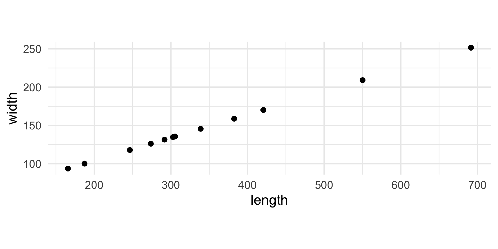
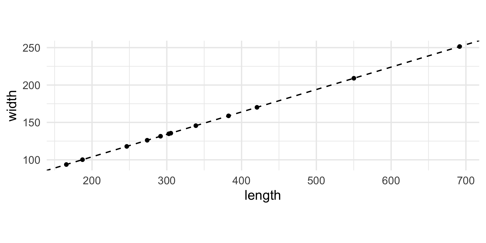
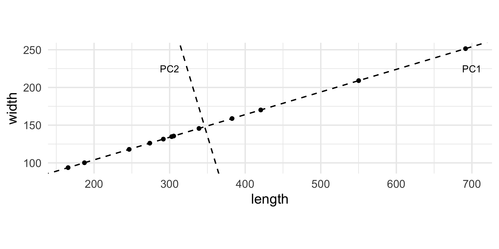
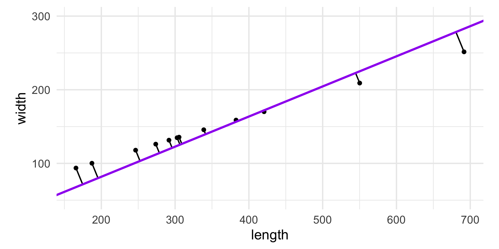
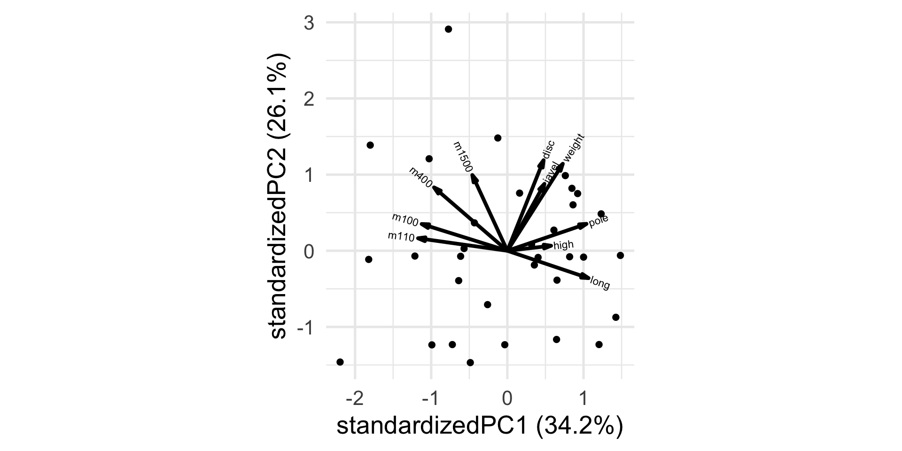
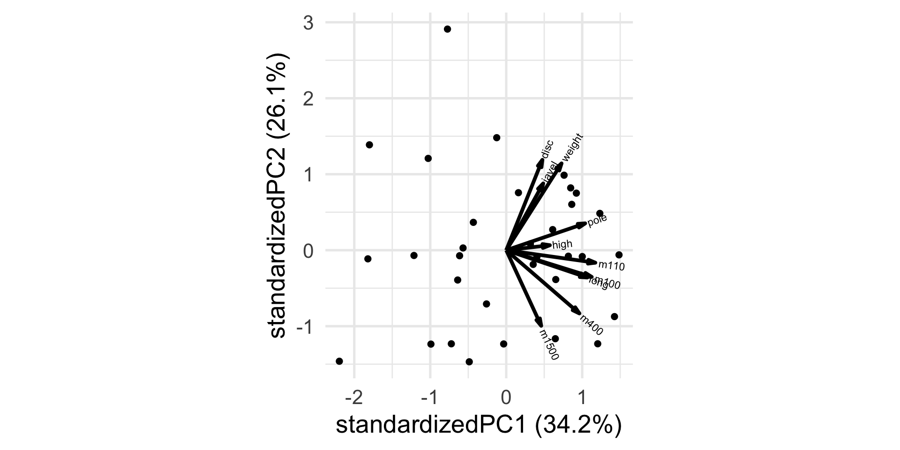
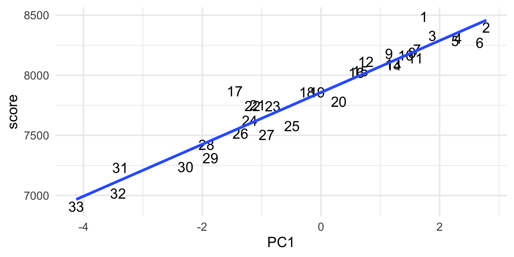
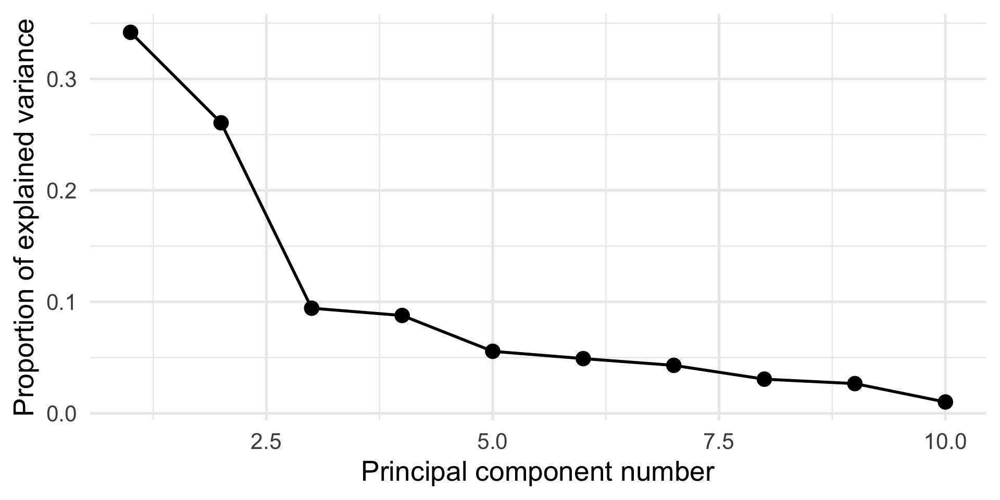
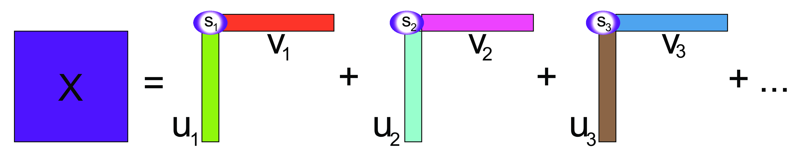
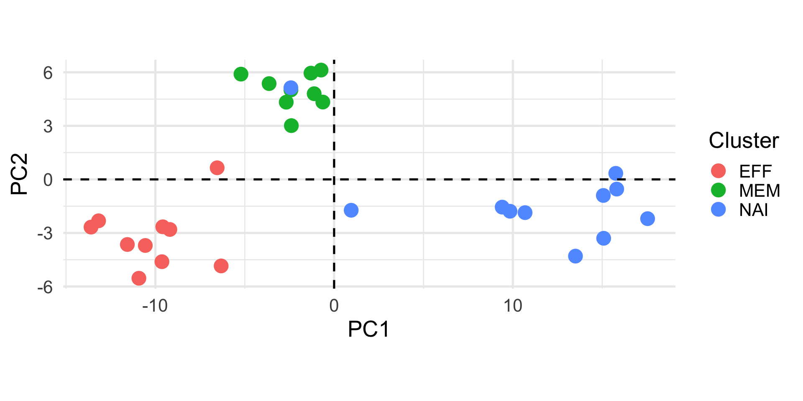

length width
1 246.45 44
2 165.64 44
3 305.35 44
4 302.72 44
5 420.58 44
6 550.15 44
7 291.66 44
8 187.26 44
9 691.57 44
10 273.75 44
11 382.57 44
12 338.83 44Advanced Statistics and Data Analysis
So far, we have focused on “supervised” problems, in which we have a response variable that we want to explain/predict using other variales (covariates).
However, many practical problems are unsupervised in nature, meaning that all the variables have the same role and the main goal is to describe/explore the relations among the variables.
Even when we do have a response, it may be useful to use unsupervised techniques for exploratory data analysis prior to modeling.
Suppose that we have a \(n \times p\) matrix \(X\) containing \(n\) observations for which we recorded \(p\) numerical variables.
When we have two variables (\(p=2\)), say height and weight, it is natural to represent the observations as points in a two-dimensional space.
We can generalize this by thinking of the \(n\) observations (the rows of a data matrix) as points in a \(p\)-dimensional space.
It is impossible to visualize the data when \(p>3\), and it is in general very hard for humans to reason in more than three-dimensional space.
Moreover, the curse of dimensionality states that the more we increase the number of dimensions the less effective Euclidean distances are to identify the similarities between data points.
One way to think about the curse of dimensionality is: if the space is big enough, no single point will be close to any other point, for a reasonable definition of “closeness”.
If we had a way to reduce in some way the dimensionality of the data, we could simplify the problem.
In general, this will lead to information loss, but we can try to preserve as much information as possible.
Suppose that we have measured the length and the width of 12 objects and the results are reported in the following table.
length width
1 246.45 44
2 165.64 44
3 305.35 44
4 302.72 44
5 420.58 44
6 550.15 44
7 291.66 44
8 187.26 44
9 691.57 44
10 273.75 44
11 382.57 44
12 338.83 44If we want to look at the variability of the data, the variable width is useless.
In other words, it does not contribute to the differences between the objects.
length width
1 246.45 43.24
2 165.64 44.81
3 305.35 43.37
4 302.72 43.88
5 420.58 44.69
6 550.15 44.73
7 291.66 43.30
8 187.26 44.14
9 691.57 44.37
10 273.75 44.63
11 382.57 43.84
12 338.83 44.11While width is not constant, length explains or captures much better the differences between the objects.
In these cases, dropping the width variable and focusing only on length would be a reasonable way to reduce the dimensionality of the dataset from two to one.
length width
1 246.45 117.92
2 165.64 93.68
3 305.35 135.59
4 302.72 134.81
5 420.58 170.16
6 550.15 209.06
7 291.66 131.51
8 187.26 100.18
9 691.57 251.46
10 273.75 126.14
11 382.57 158.79
12 338.83 145.64Do you notice anything?



PC1 PC2
[1,] -104.33 -0.01
[2,] -188.70 -0.01
[3,] -42.84 -0.01
[4,] -45.58 0.00
[5,] 77.47 -0.01
[6,] 212.75 0.01
[7,] -57.12 0.01
[8,] -166.12 0.00
[9,] 360.39 -0.01
[10,] -75.82 0.02
[11,] 37.79 0.02
[12,] -7.88 -0.01The new variable PC1 represents the global dimension of the object.
The new variable is centered, meaning that the mean is zero, and positive and negative values correspond to “large” and “small” objects, respectively.
The new variable PC2 is almost useless as it is “almost zero” for all objects.
This is an example of Principal Component Analysis (PCA).
PCA can be interpreted geometrically as a rotation of the original axes, but in statistics it is often used as a way to reduce the dimensionality of the problem.
The example that we just saw is a good example of that: now that we know that we have seen that the second new variable does not explain much of the variability of the data, we can drop it and keep only the first one.
The “new variables” that we have discussed are called Principal Components.
The first principal component of the data, PC1, is obtained by minimizing the sum of squares of the orthogonal (perpendicular) projections of data points onto it.

Pythagoras’ theorem tells us that the total variability of the points is measured by the sum of squares of the projection of the points onto the center of gravity.
For a fixed variance, minimizing the projection distances also maximizes the variance along that line.
Often we define the first principal component as the direction with maximum variance.
We can define the first principal component as the linear combination of the \(p\) original variables \[ Y_1 = a_{11} X_1 + a_{12} X_2 + \ldots + a_{1p} X_p \] that captures most of the variability of the data.
The second principal component is the linear combination of the original variables \[ Y_2 = a_{21} X_1 + a_{22} X_2 + \ldots + a_{2p} X_p \] that explains the most variability among the directions orthogonal to the first PC.
This dataset reports the performances for 33 athletes in the ten disciplines of the decathlon:
m100 long weight high m400 m110 disc pole javel m1500
1 11.25 7.43 15.48 2.27 48.90 15.13 49.28 4.7 61.32 268.95
2 10.87 7.45 14.97 1.97 47.71 14.46 44.36 5.1 61.76 273.02
3 11.18 7.44 14.20 1.97 48.29 14.81 43.66 5.2 64.16 263.20
4 10.62 7.38 15.02 2.03 49.06 14.72 44.80 4.9 64.04 285.11
5 11.02 7.43 12.92 1.97 47.44 14.40 41.20 5.2 57.46 256.64
6 10.83 7.72 13.58 2.12 48.34 14.18 43.06 4.9 52.18 274.07
7 11.18 7.05 14.12 2.06 49.34 14.39 41.68 5.7 61.60 291.20
8 11.05 6.95 15.34 2.00 48.21 14.36 41.32 4.8 63.00 265.86
9 11.15 7.12 14.52 2.03 49.15 14.66 42.36 4.9 66.46 269.62
10 11.23 7.28 15.25 1.97 48.60 14.76 48.02 5.2 59.48 292.24 PC1 PC2
m100 -0.4158823 0.1488081
long 0.3940515 -0.1520815
weight 0.2691057 0.4835374
high 0.2122818 0.0278985
m400 -0.3558474 0.3521598
m110 -0.4334816 0.0695682
disc 0.1757923 0.5033347
pole 0.3840821 0.1495820
javel 0.1799436 0.3719570
m1500 -0.1701426 0.4209653How do you interpret the first PC? The second?

Unlike the other disciplines, for running the higher the “score” (time) the worse the performance.
Let’s transform the variable so that higher scores will be better, by simply multiplying by -1.

PC1 PC2
m100 0.4158823 -0.1488081
long 0.3940515 -0.1520815
weight 0.2691057 0.4835374
high 0.2122818 0.0278985
m400 0.3558474 -0.3521598
m110 0.4334816 -0.0695682
disc 0.1757923 0.5033347
pole 0.3840821 0.1495820
javel 0.1799436 0.3719570
m1500 0.1701426 -0.4209653How do you interpret the first PC? The second?

Let \(X\) be a \(p\)-dimensional random vector with mean \(\mu\) and covariance matrix \(\Sigma\).
The principal component transformation of \(X\) is defined as the standardized linear combination \[ Y = \Gamma^{\top}(X - \mu). \]
From the Spectral Decomposition Theorem,
The \(j\)th principal component (\(j\)th PC or \(PC_j\)) of \(X\) is then \[ Y_j = \gamma_j^{\top}(X-\mu), \]
where the \(j\)th eigenvector \(\gamma_j\) is referred to as the \(j\)th vector of principal component loadings.
PC1 PC2 PC3 PC4 PC5 PC6
1 1.732961 1.2313696 2.79089389 0.29003667 0.15622630 1.74397282
2 2.787241 -0.1006798 -0.83841190 -0.13433649 0.06087808 0.09530507
3 1.879222 -0.1368925 -0.04459194 -0.97006947 -0.91131154 -0.22215243
4 2.313145 0.7945733 -0.34689208 0.25951896 1.34021373 -0.32968229
5 2.260710 -2.0191111 -0.48105873 -0.07332298 -0.96067748 -0.10001486
6 2.675217 -1.4325423 0.52242032 1.64275774 0.88508390 0.30958894
PC7 PC8 PC9 PC10
1 0.26554894 0.09359083 0.2533807 -0.17971152
2 0.03842105 -0.01900623 0.3275702 -0.10364744
3 0.43765023 -0.23283058 0.2806787 0.28922751
4 -0.29060776 1.10765204 0.1018245 0.07577141
5 0.25106516 -0.27468209 0.2630097 0.53448629
6 0.89152974 -0.03891612 -0.1928160 0.22205169 PC1 PC2 PC3 PC4 PC5 PC6
m100 0.4158823 -0.1488081 -0.26747198 0.08833244 0.442314456 -0.03071237
long 0.3940515 -0.1520815 0.16894945 -0.24424963 0.368913901 -0.09378242
weight 0.2691057 0.4835374 -0.09853273 -0.10776276 -0.009754680 0.23002054
high 0.2122818 0.0278985 0.85498656 0.38794393 -0.001876311 0.07454380
m400 0.3558474 -0.3521598 -0.18949642 -0.08057457 -0.146965351 0.32692886
m110 0.4334816 -0.0695682 -0.12616012 0.38229029 0.088802794 -0.21049130
PC7 PC8 PC9 PC10
m100 -0.2543985 0.66371283 -0.1083953 0.10948045
long 0.7505343 -0.14126414 -0.0461391 -0.05580431
weight -0.1106637 -0.07250556 -0.4224761 -0.65073655
high -0.1351242 0.15543587 0.1020651 -0.11941181
m400 -0.1413388 -0.14683930 0.6507623 -0.33681395
m110 -0.2725296 -0.63900358 -0.2072385 0.25971800The principal components satisfy the following properties.
\[ E[Y] = 0, \]
\[ \text{Cov}(Y) = \Lambda = \text{Diag}(\lambda_j: j=1,\dotsc,p) \] and, in particular, \[ \text{Var}(Y_1) \geq \text{Var}(Y_2) \geq \dotsc \geq \text{Var}(Y_p). \]
\[ \sum_{j=1}^p \text{Var}(Y_j) = \text{tr}(\Sigma) = \sum_{j=1}^p \lambda_j. \]
\[ \prod_{j=1}^p \text{Var}(Y_j) = |\Sigma| = \prod_{j=1}^p \lambda_j. \]
PC1 PC2 PC3 PC4 PC5 PC6 PC7 PC8 PC9 PC10
0 0 0 0 0 0 0 0 0 0 PC1 PC2 PC3 PC4 PC5 PC6 PC7 PC8 PC9 PC10
PC1 3.42 0.00 0.00 0.00 0.00 0.00 0.00 0.00 0.00 0.0
PC2 0.00 2.61 0.00 0.00 0.00 0.00 0.00 0.00 0.00 0.0
PC3 0.00 0.00 0.94 0.00 0.00 0.00 0.00 0.00 0.00 0.0
PC4 0.00 0.00 0.00 0.88 0.00 0.00 0.00 0.00 0.00 0.0
PC5 0.00 0.00 0.00 0.00 0.56 0.00 0.00 0.00 0.00 0.0
PC6 0.00 0.00 0.00 0.00 0.00 0.49 0.00 0.00 0.00 0.0
PC7 0.00 0.00 0.00 0.00 0.00 0.00 0.43 0.00 0.00 0.0
PC8 0.00 0.00 0.00 0.00 0.00 0.00 0.00 0.31 0.00 0.0
PC9 0.00 0.00 0.00 0.00 0.00 0.00 0.00 0.00 0.27 0.0
PC10 0.00 0.00 0.00 0.00 0.00 0.00 0.00 0.00 0.00 0.1The principal components are not scale-invariant!
Depending on the types of variables under consideration, scaling or use of the correlation matrix instead of the covariance matrix may be in order.
The proportion of total variation explained by the first \(K\) principal components is given by \[ p_K = \frac{\sum_{j=1}^K \lambda_j}{\sum_{j=1}^p \lambda_j}. \]
The scree plot, i.e., a plot of \(\lambda_j\) vs. \(j\), can be used to determine how many components to use (stop at “elbow”).
Importance of components:
PC1 PC2 PC3 PC4 PC5 PC6 PC7
Standard deviation 1.8488 1.6144 0.97123 0.9370 0.74607 0.70088 0.65620
Proportion of Variance 0.3418 0.2606 0.09433 0.0878 0.05566 0.04912 0.04306
Cumulative Proportion 0.3418 0.6025 0.69679 0.7846 0.84026 0.88938 0.93244
PC8 PC9 PC10
Standard deviation 0.55389 0.51667 0.31915
Proportion of Variance 0.03068 0.02669 0.01019
Cumulative Proportion 0.96312 0.98981 1.00000
Recall that the principal components are linear combinations of the \(p\) original variables that explain the most variability in the data. E.g., \[ Y_1 = a_{11} X_1 + a_{12} X_2 + \ldots + a_{1p} X_p. \]
But how can we find the coefficients \(a_{1j}\)?
Singular Value Decomposition (SVD) is a fundamental linear algebra technique that factorizes any \(n \times p\) matrix \(X\) as \[ X = U D V^{\top}, \] where
The intuition behind SVD is that it decomposes \(X\) into a sum of rank-one matrices, obtained by multiplying the columns of \(U\) and \(V\), weighted by the diagonal elements of \(D\).

SVD
The singular vectors from SVD contain the coefficients of the linear combinations of the original variables that define the principal components.
In practice, we can compute the principal components as \(U D\).
X <- scale(as.matrix(athletes), center = TRUE, scale = TRUE)
svdX <- svd(X)
# Principal components
head(svdX$u %*% diag(svdX$d))[,1:2] [,1] [,2]
[1,] 1.732961 1.2313696
[2,] 2.787241 -0.1006798
[3,] 1.879222 -0.1368925
[4,] 2.313145 0.7945733
[5,] 2.260710 -2.0191111
[6,] 2.675217 -1.4325423 PC1 PC2
1 1.732961 1.2313696
2 2.787241 -0.1006798
3 1.879222 -0.1368925
4 2.313145 0.7945733
5 2.260710 -2.0191111
6 2.675217 -1.4325423 [,1] [,2]
[1,] 0.4158823 -0.1488081
[2,] 0.3940515 -0.1520815
[3,] 0.2691057 0.4835374
[4,] 0.2122818 0.0278985
[5,] 0.3558474 -0.3521598
[6,] 0.4334816 -0.0695682 PC1 PC2
m100 0.4158823 -0.1488081
long 0.3940515 -0.1520815
weight 0.2691057 0.4835374
high 0.2122818 0.0278985
m400 0.3558474 -0.3521598
m110 0.4334816 -0.0695682We have seen that unlike regression, PCA treats all variables equally.
However, it is still possible to map other continuous variables or categorical factors onto the plots in order to help interpret the results.
Often we have complementary information on the samples and looking at the observations in the space of the first few PCs can be a valuable exploratory data analysis tool.
Holmes et al. (2005) studied gene expression profiles of sorted T-cell populations from different subjects.
The columns are a subset of gene expression measurements, they correspond to 156 genes that show differential expression between cell types.
X3968 X14831 X13492 X5108 X16348 X585
HEA26_EFFE_1 -2.61 -1.19 -0.06 -0.15 0.52 -0.02
HEA26_MEM_1 -2.26 -0.47 0.28 0.54 -0.37 0.11
HEA26_NAI_1 -0.27 0.82 0.81 0.72 -0.90 0.75
MEL36_EFFE_1 -2.24 -1.08 -0.24 -0.18 0.64 0.01
MEL36_MEM_1 -2.68 -0.15 0.25 0.95 -0.20 0.17